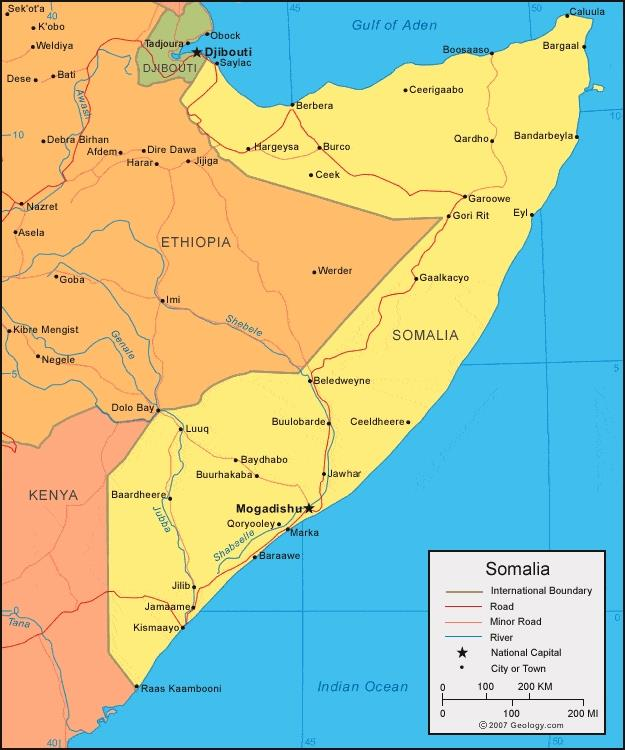

.png)

Le drapeau de la Somalie est composé de trois bandes horizontales égales de couleur bleue, blanche et rouge. Le bleu est en haut, suivi du blanc au centre, et le rouge en bas. Le bleu symbolise le ciel, le blanc représente la paix, et le rouge symbolise le sang versé pour l'indépendance. Le drapeau a été adopté le 12 octobre 1954, quelques jours après l'indépendance de la Somalie.
Mogadiscio, la capitale de la Somalie, a une histoire riche et complexe qui remonte à l'Antiquité. Voici un aperçu succinct de l'histoire de Mogadiscio : Antiquité : La région de Mogadiscio a une longue histoire d'occupation humaine. Des vestiges archéologiques suggèrent que la région a été habitée dès l'Antiquité par des communautés qui se sont livrées au commerce avec d'autres parties de l'Afrique et du Moyen-Orient. Période islamique : Mogadiscio a joué un rôle important dans le commerce le long de la côte est-africaine et a été influencée par le monde musulman dès le VIIe siècle. Elle est devenue un centre islamique et un port actif sur la route des épices.
En Somalie, la langue officielle est le somali. Le somali est une langue afro-asiatique de la branche des langues couchitiques. En plus du somali, l'arabe est également largement utilisé en raison de son importance religieuse dans la région, en tant que langue du Coran.
La monnaie officielle de la Somalie est le shilling somalien. Le code de devise ISO 4217 pour le shilling somalien est SOS. Le shilling somalien est émis par la Banque centrale de la Somalie. Il existe différentes dénominations de billets de banque et de pièces de monnaie en circulation. La stabilité économique et la valeur du shilling somalien peuvent être influencées par divers facteurs, y compris la situation politique et économique du pays.
Certains auteurs affirment que durant l'Antiquité, la région connue par les Égyptiens sous le nom du pays de Pount était en Somalie. La côte était connue par les Romains, les Grecs et les Indiens puisque ce fut le plus important centre commercial pour la myrrhe et l'encens ainsi que dans une moindre importance pour l'ébène et l'or. Les commerçants arabes s'installent sur la côte et les Somalis adoptent l'islam, qui s'implante définitivement à partir du XIIIe siècle : c'est le début du sultanat.
Il est élu président de la République le 10 septembre 2012 au deuxième tour par le Parlement fédéral de transition réuni dans la capitale Mogadiscio, obtenant 190 voix contre le président sortant Sharif Sheikh Ahmed qui en obtient 793,4,5. Il prend ses fonctions le 16 septembre.
La Somalie est devenue un État indépendant le 1er juillet 1960, issue de la réunion de la Somalie britannique (indépendant de la Grande-Bretagne depuis le 26 juin 1960) et de la Somalie italienne (alors sous tutelle des Nations unies). Le président de la République est le chef de l'État et le Premier ministre assume la fonction de chef du gouvernement. Le pouvoir législatif est partagé entre le gouvernement et le Parlement.
Après la chute du régime de la République démocratique somalie dirigé par le général Mohamed Siad Barre, vaincu par le Congrès de la Somalie unie (CSU) le 27 janvier 1991, diverses factions militaires ont pris le contrôle du pays. Le chaos qui s'ensuivit incita à mettre en place une intervention internationale menée par les États-Unis, l'UNITAF. Cette opération fut suivie par la Mission des Nations unies en Somalie, qui fut soldée par un échec en 1994. Depuis 1991, toutes les tentatives de réconciliation nationale ont échoué et divers groupes et factions tentent d'étendre leur emprise territoriale et se livrent régulièrement à des conflits. En 1997, Mohamed Ibrahim Egal fut élu par ses partisans Président de la République du Somaliland, soit les provinces du nord-ouest. En 1998, la région du Puntland, au nord-est, se déclara autonome avec Abdullahi Yusuf Ahmed comme président et Garowe pour capitale. Le Puntland affirma sa volonté de rester autonome jusqu'à la mise sur pied d'une fédération de Somalie. Abdullah Yusuf dirigea la région jusqu'au milieu de l'année 2001 puis le colonel Jama Ali Jama lui succéda en novembre. Les forces restées fidèles à Abdullah Yusuf, qui s'était retiré sur Galkayo, ont alors attaqué Garowe, ce qui aboutit à la partition de fait du Puntland.
Aïd al-Fitr : C'est la fête qui marque la fin du mois sacré du Ramadan, au cours duquel les musulmans jeûnent du lever au coucher du soleil. Aïd al-Fitr est une occasion de joie, de partage de repas festifs et de charité envers les moins fortunés. Aïd al-Adha : Aussi connu sous le nom de l'Aïd el-Kebir ou la fête du sacrifice, cette célébration commémore la volonté du prophète Ibrahim (Abraham dans la tradition abrahamique) de sacrifier son fils pour obéir à Dieu. Les familles sacrifient des animaux et partagent la viande avec les nécessiteux. Mawlid al-Nabi : Cette fête célèbre la naissance du prophète Muhammad. Les célébrations peuvent inclure des récitations de poésie religieuse, des défilés et des actes de charité.
Le canjeero est consommé de différentes manières, parfois cassé en petits morceaux avec ajout de ghî (subag) et de sucre. Pour les enfants, il est mélangé avec du thé et de l'huile de sésame (macsaaro) jusqu'à consistance pâteuse. Il peut être accompagné de foie (de bœuf), de viande de chèvre (ari hilib), de dés de bœuf cuits dans un fond de soupe (suqaar) ou de viande séchée (oodkac ou muqmad) de chèvre ou de chameau, bouillie dans du beurre clarifié. La polenta (mishaari ou boorash en bouillie), avec du beurre et du sucre, est populaire à Mogadiscio. Dans le nord, le pain (rooti) a la préférence. En Somalie, une version plus sucrée et plus grasse de canjeero appelée malawax constitue un aliment de base des repas à la maison.
La galette se fait principalement sur la base d'un mélange entre la graine de teff et de l'eau. Elle demande à être cultivée dans des régions d’une altitude importante avec une température à pluviométrie suffisante. Ainsi, pour des raisons d’inaccessibilité économiques comme géographiques, elle peut être remplacée par d’autres graines et céréales telles que la farine de blé, le maïs ou l'orge. En addition à cela, il existe aussi une variante de l’injera connue sous le nom de canjeelo qui est préparée à partir d’une pâte à base de farine ordinaire, de levure, d’eau tiède et d’une pincée de sel. Ce mélange est ensuite battu à la main jusqu'à ce que sa texture devienne douce et crémeuse.